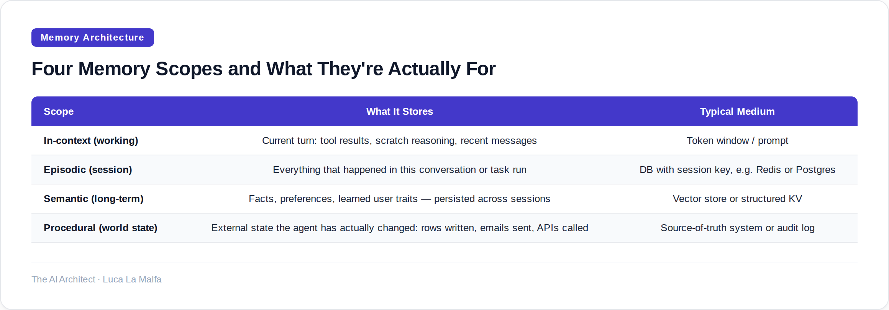
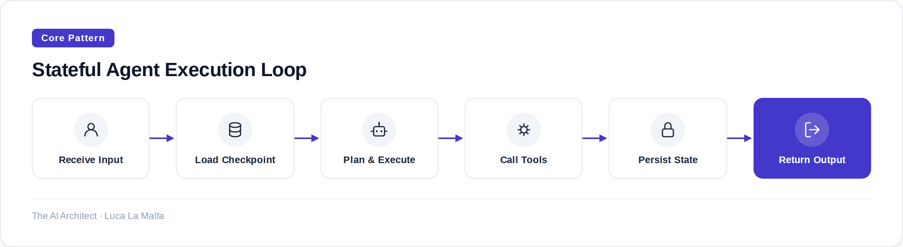

How you model agent state determines whether your system recovers gracefully or fails silently under pressure.
August 15, 2026
Most agent failures I debug aren't model failures. The model knew what to do. The system just forgot what had already happened. A tool call succeeded on step three, but by step seven the agent had no reliable way to know that — so it called the tool again, wrote a duplicate record, and the user got billed twice. Memory wasn't a nice-to-have. It was load-bearing infrastructure that nobody designed.
Agent memory is one of those topics that gets compressed into a single word — "context" — as if that settles it. It doesn't. Context is just the immediate token window. Memory is everything else: what happened in previous turns, what the agent learned about the user or task, what intermediate results it produced, and what state the world is in right now. Conflating them is the first mistake most teams make when they move from a single-shot LLM call to a multi-step agent.

The comparison above isn't theoretical taxonomy — it maps directly to where things break. In-context memory breaks when the window fills and you start truncating without a strategy. Episodic memory breaks when you restart a run after a crash and the agent has no idea where it left off. Semantic memory breaks when stale facts from six months ago override what the user just told you. Procedural memory — tracking actual side effects — breaks when you assume idempotency you never actually guaranteed. Each scope has its own failure mode, and each needs its own design decision.
The trickiest scope is procedural. Developers spend a lot of energy on what the agent knows and almost none on what the agent has done. But in any agent that takes real-world actions — sending messages, writing to databases, calling external APIs — you need a durable record of completed actions that survives process restarts. Without it, you get the double-execution bug I described above. The fix isn't clever prompting. It's checkpointing: persisting a state snapshot after every meaningful action so that resumption is safe and deterministic.

The flow above looks simple, but step two — "Load Checkpoint" — is where most implementations are underbuilt. A checkpoint needs to capture not just the message history but the full graph of what nodes have run, what tool calls completed successfully, and what the pending next step is. If your checkpoint is just a list of chat messages, you can reconstruct a conversation but you can't safely resume an interrupted task. Those are different requirements and they need different data models.
One design decision that comes up constantly in enterprise work: should memory be scoped to the user, the task, or the session? The answer is usually all three, layered. Session state is ephemeral and fast — it lives in memory or Redis and gets discarded when the run ends. Task state needs durability — it has to survive crashes and be queryable after the fact for auditing. User state needs careful governance — in regulated industries you may be legally required to let users inspect or delete what you've stored about them. Building a single monolithic "memory" object that serves all three purposes is a shortcut that creates problems you won't see until production.
The rule I enforce on every agent project
I require a written answer to three questions before any agent goes to staging: What state does it read at the start of each run? What state does it write, and when exactly? What happens if the process dies between those two moments? If the team can't answer all three, the agent isn't ready. Most of the time, this exercise surfaces a missing checkpoint or an implicit assumption about idempotency that would have caused a real incident within a week of launch.
langchain-ai/langgraph — Stateful agent graphs with built-in persistence and memory.
Inspired by Introducing Muse Glimmer (Simon Willison)